Research
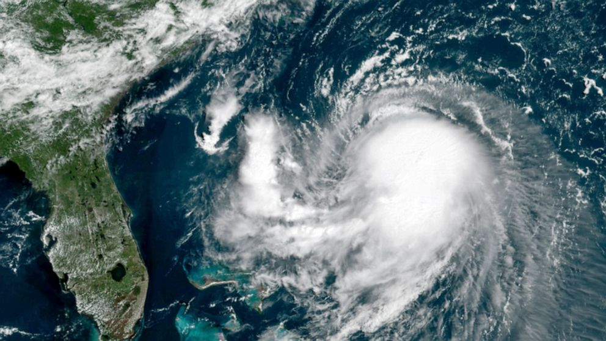
Hurricane AI:
Developing tools for detecting hurricane conditions in satellite images. Click the link above for more details.
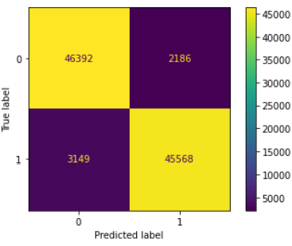
Toxic Message Classification:
Developed a Twitch bot to filter offensive content in channels. Bot trained on chat data classified based on messages being timed out or not. Bot achieved 98% success rate and is currently in use on a Twitch channel. Click the link above for more details.
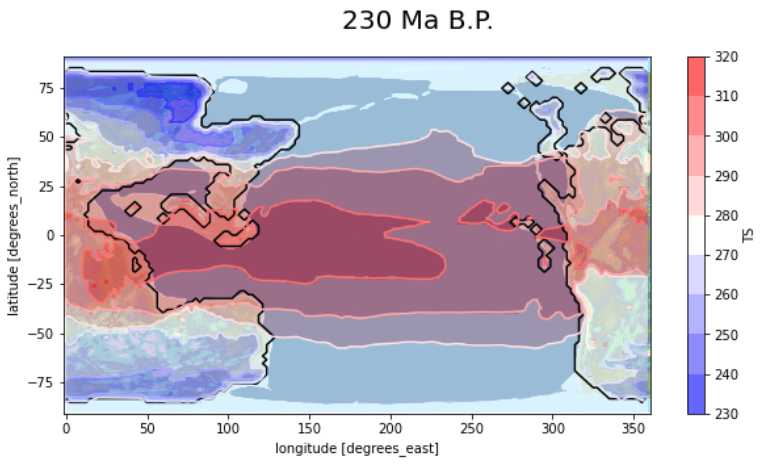
Climate Modeling:
Developing an AWS interface to allow the general public to perform climate simulations. Successfully ported CESM to AWS. Successfully ported ISCA to AWS. Developed novel tools for using CESM to perform paleoclimate simulations. Includes functionality for varying continents from 500Ma BP to the current era, era specific CO2 levels, and era specific solar constant. Also includes Milankovitch cycles. Grant provided by the Carl Sagan Institute.
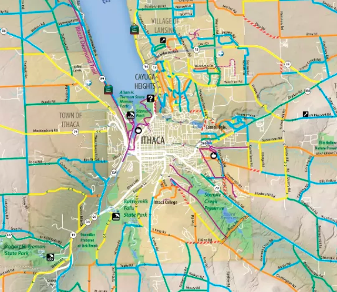
Road Conditions Prediction:
Developing and planning a hyperlocal weather forecasting system designed to improve winter-storm emergency response and enhance natural disaster coordination for New York state's rural communities.
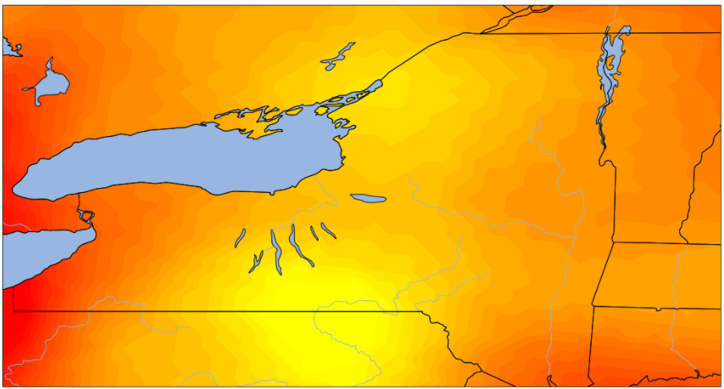
Weather Forecasting:
Developed python code to setup WRF on AWS and a post-processing environment on Amazon Workspace. Led team of undergraduate students using this code to perform on-demand weather forecasting for Tompkins County.
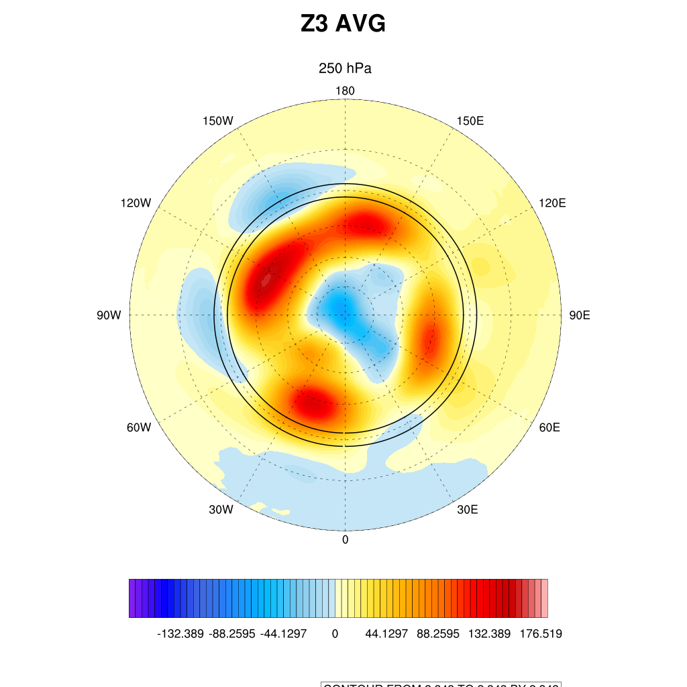
Idealized Planet Simulations:
Led research on the effect of heat anomalies injected into aquaplanet SSTs and drycore surface anomalies on the polar vortex. Ran drycore and aquaplanet simulations on Cheyenne Supercomputer using CESM. Click link above for more details.
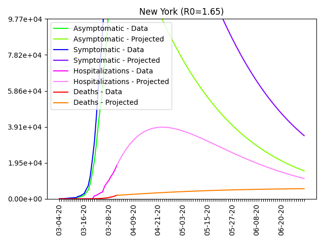
COVID Modeling:
Built custom compartmental infectious disease model including asymptomatic, symptomatic, hospitalization, and death projections for the entire United States. Social distancing included along with gradient descent-based parameter estimation. Model hosted on AWS and constantly updated using CovidTracking API.
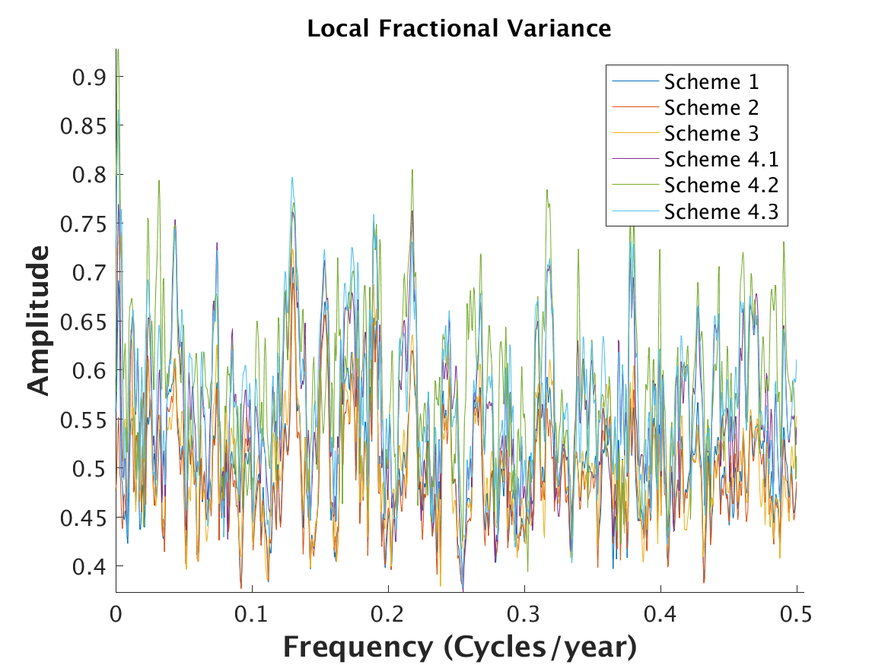
Low Frequency Climate Variability in Tree Rings:
Updated and improved a complex database of tree ring information from a variety of disparate, obscure, and hard-to-access data sources.
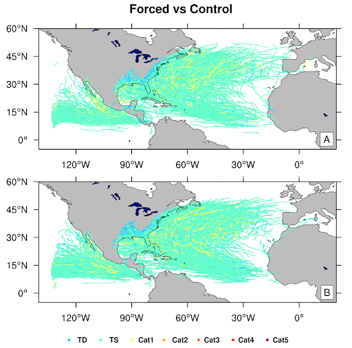
Effect of Volcanic Eruptions on Hurricanes:
Analyzed the effect of volcanic eruptions on hurricane intensity, life span, and frequency. Led the largest (temporally and spatially) downscaling of global circulation model data, spanning 1,000 years of climate data and encompassing the Atlantic ocean and continental US. Produced and analyzed 20TB of raw data from high-resolution coupled atmosphere-ocean regional climate simulations with focus on hurricane statistics. Created the code to parallelize annual downscaling of global circulation model data. Improved efficiency by automating the storage, cleaning, and compression of the dataset. Submitted results for publication, demonstrating minor effects of volcanic eruptions on hurricane statistics.
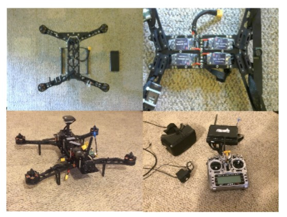
Immersive Telepresence with Aerial Vehicles:
For this project a proposal was written to develop a systems solution for immersive real-time viewing while flying miniature aerial vehicles. The prototype aerial vehicle was built from scratch.
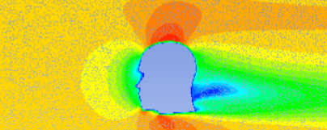
Aerodynamic Sound from Head-related Turbulence:
The goal of this work was to construct a model for sound resulting from wind flow around a human head through precomputed fluid dynamics and runtime synthesis of stored sound textures.
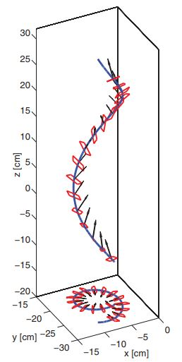
Aerodynamics of Falling Maple Seeds:
Initial attempts were made to numerically simulate motion of falling airfoils geometrically similar to maple seeds. Made use of experiment recordings and image processing to extract empirically based generalized force models.
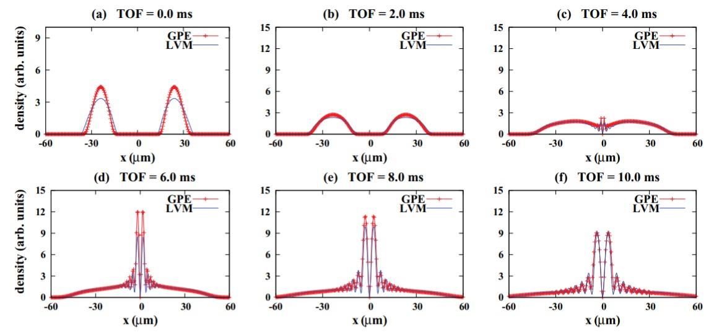
Expansion of Ring Bose-Einstein Condensates:
Analytical modelling of bose-einstein condensate expansion after being released from a ring trap. Made use of numerical simulation of the Gross-Pitaevski equation and the lagrangian variational approach for analytics. Results were published in Physical Review E.
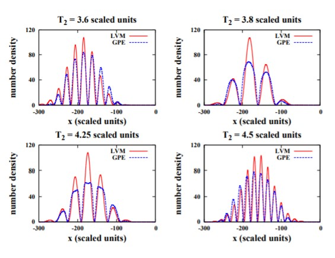
Prototyping Bragg-type Atom Interferometers:
Focused on approximate analytical solution for bose-einstein condensate behavior after being subjected to differently timed bragg pulses. Made use of the lagrangian variational approach for analytics which were validated by experiments done at NIST. This work served as my undergraduate thesis, and was published in Physical Review A.
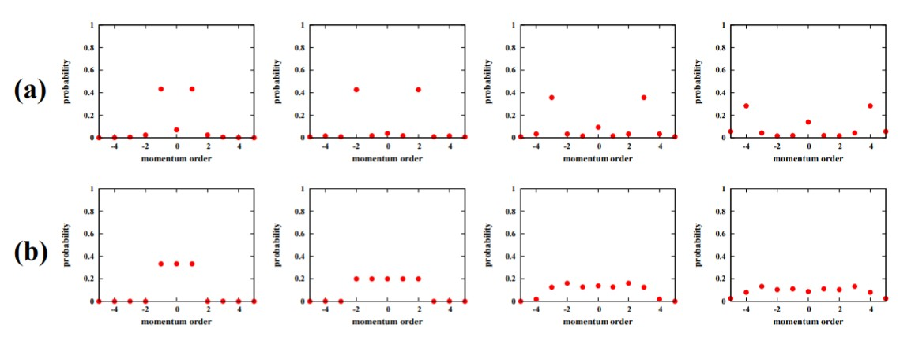
Engineering Bose-Einstein Condensate Momentum Distributions:
Analytical treatment was used to describe a condensate after N applied standing-wave pulses with varying time-intervals. Made use of numerical least-squares optimization to determine laser properties for generating specific momentum distributions. This work was also published in Physical Review A.
 PC Build:
Built PC from scratch including a custom hard-tube water cooling loop.
PC Build:
Built PC from scratch including a custom hard-tube water cooling loop.